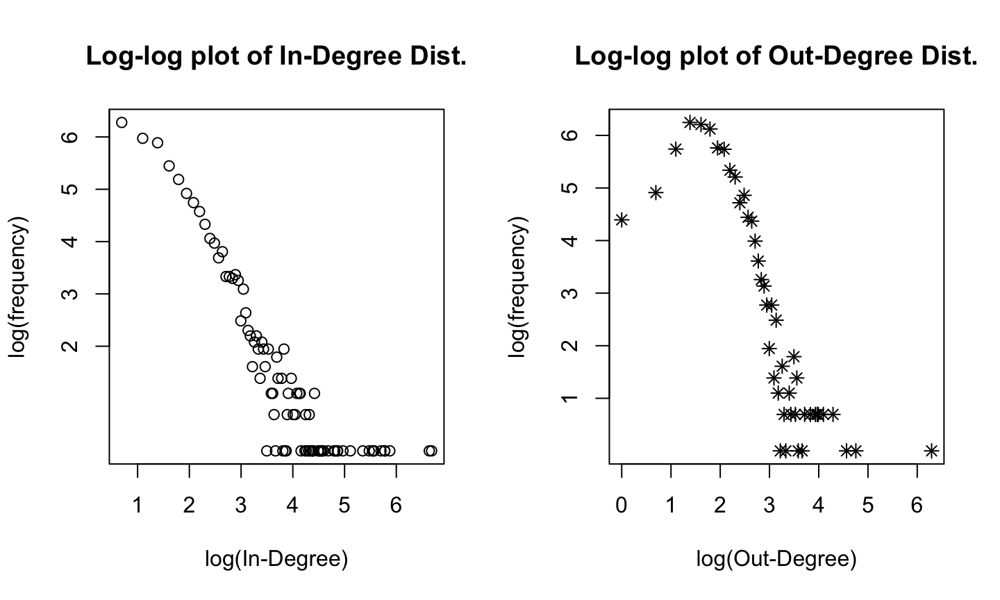
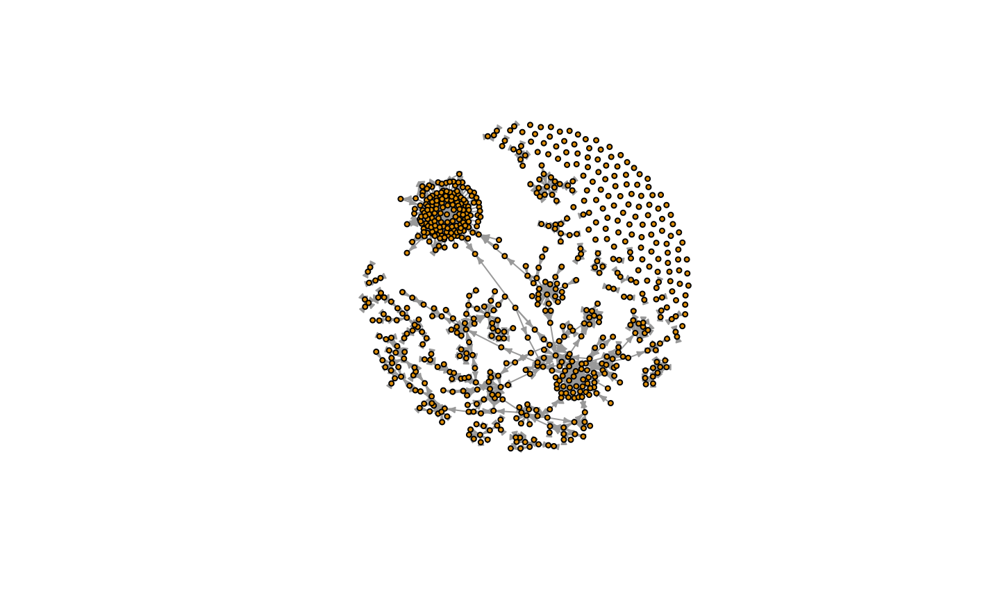
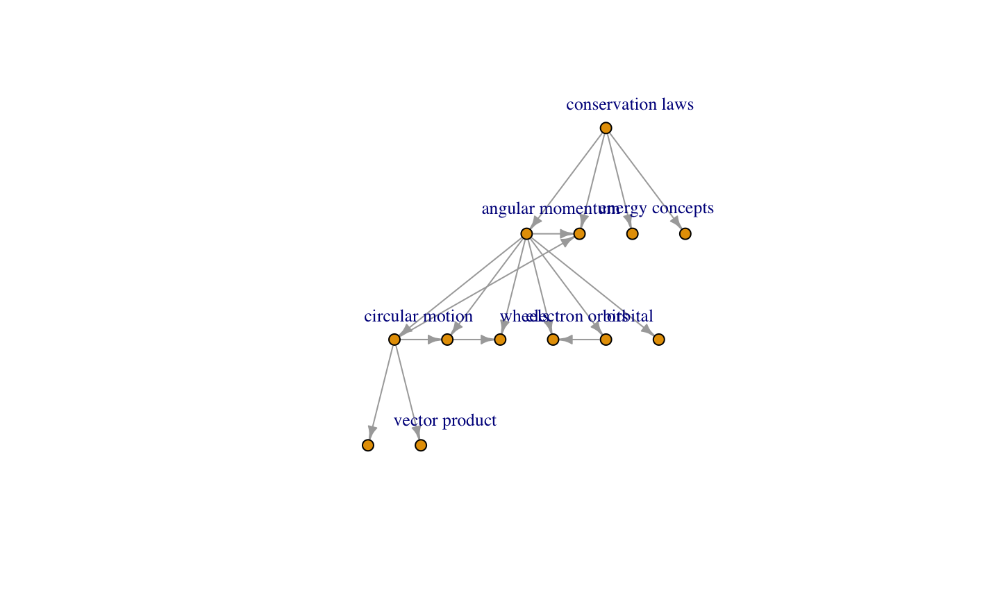

- Objective
- To extract hierarchical structure of articles for a field (say, Mathematics, Physics..)
- Why?
- Individual learning is still hierarchical
- Can be used to create structured curriculum content with just resources available on the web
- Identify gaps in information on the web
December 6, 2017
Introduction
Data
- HTML Physics textbook (http://hyperphysics.phy-astr.gsu.edu/)
- More complete hyperlink structure
- Smaller network, easier to work with
- Scraping to get the hyperlinks for every page
library(rvest) library(xml2)
Looking at the links for the page "acceleration"
url <- "http://hyperphysics.phy-astr.gsu.edu/hbase/acca.html#c1" webpage <- read_html(url) nodes <- html_nodes(webpage, "a") titles <- html_text(nodes) links <- html_attr(nodes, "href")
Data
head(links[-1])
## [1] "vel2.html#c1" "vect.html#veccon" "vect.html#vec1" ## [4] "units.html#uni4" "deriv.html#c1" "mot.html#mot1"
head(titles[-1])
## [1] "velocity" ## [2] "vector" ## [3] "vector addition" ## [4] "units" ## [5] "derivative" ## [6] "Motion equations when acceleration is constant"
Network
- ~20 mins and a lot of cleaning later, we have the complete hyperlink sturucture
head(page_details, 4) ## Vetrex and Vertex attribute (title)
## url title ## 1 acca.html acceleration ## 2 vel2.html velocity ## 3 vect.html vector ## 4 units.html units
head(edge_list, 4) ## Edgelist
## from_url to_url ## 1 acca.html vel2.html ## 2 acca.html vect.html ## 3 acca.html units.html ## 4 acca.html deriv.html
Network Statistics
## [1] "No. of Nodes: 3747"
## [1] "No. of Edges: 27817"
## [1] "Density: 0.00198"
## [1] "Mean In-Degree: 7.4238"
## [1] "Mean Out-Degree: 7.4238"
## [1] "Network Centralization: 0.275"
## [1] "Average Geodesic Distance: 6.093"
Degree Distribution

Geodesic distance Distribution

Hierarchy Extraction
- Looking at a random tree-structure, we can see that greater centrality corresponds to the higher level in the hierarchy

Hierarchy Extraction
- Define a suitable hierarchy score for each node
- Compare scores for 2 neighboring nodes (in the underlying undirected network)
- If ratio of scores is between a lower and an upper threshold
- Then, the node with the higher score is higher in the hierarchy
- Cutoff eliminates
- relations between two highly different nodes
- relations where the nodes are too similar (i.e. ratio ~1)
- edges to leaf nodes in the hierarchy
Betweenness Centrality
\[I(i) = \frac{C_B(i)}{\sqrt{[k_{in}(i)+1][k_{out}(i)+1]}} \] \(I(i)\): Betweenness based hierarchy score for node \(i\)
\(C_B(i)\): Betweenness Centrality of node \(i\)
\(k_{in}(i)\): In-degree of node \(i\)
\(k_{out}(i)\): Out-degree of node \(i\)
Results

Page-Rank Centrality based
\[PR(u) = \sum_{v\in B_u}\frac{PR(v)}{L(v)} \] \(PR(u)\): Page-Rank for node \(u\)
\(B_u\): The set containing all nodes linking to node \(u\)
\(L(v)\): No. of edges from node \(v\)
Results
Attraction Basin Hierarchy score
\[ A(i) = \big(\sum_m \alpha^{-m}\frac{N_{-m}(i)}{<N_{-m}>})\Big/\big(\sum_m \alpha^{-m}\frac{N_{m}(i)}{<N_{m}>}) \]
\(A(i)\): Attraction basin based hierarchy score for node \(i\)
\(\alpha\): Weighting parameter which weighs closer nodes higher
\(N_{-m}(i)\): Number of nodes which can reach node \(i\) in \(m\) directional edges
\(N_{m}(i)\): Number of nodes which node \(i\) can reach in \(m\) directional edges
\(<N_{-m}>\): Average \(N_{-m}(i)\) for all nodes \(i\) in the graph
\(<N_{m}>\): Average \(N_{m}(i)\) for all nodes \(i\) in the graph
Results
Challenges & work to do
- Better plotting for easier visualization of the hierarchy
- A formal validation of the full hierarchical network
- To compare the output from different methods
- Better understanding of the sensitivity to cutoff
- If time permits (or over the winter), taking a dig at the Wikipedia Network